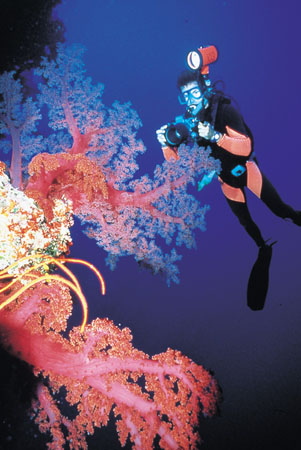
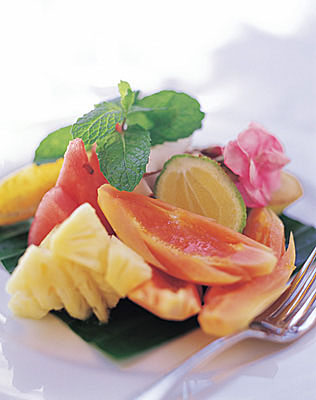

Evening paints a subtle hue across the beach at VATULELE ISLAND RESORT, FIJI.
The comfortable Point Villa, Vatulele's premier lodging, perches at the far northern
end of a sweeping 900-meter white-sand beach that offers all guests a private niche.
So sorry to report, this magnificent property is in flux, seeking new ownership now.
© Copyright John Hessburg, U.S. Dive Travel Network. All Rights Reserved.

View from the south-facing balcony of ultra-luxury Point Villa at VATULELE ISLAND RESORT, FIJI.
This exquisitely appointed, spacious 5-star beach unit easily ranks in the Top Five Luxury Villas that
U.S. Dive Travel owners have reviewed anywhere in the South Pacific region since the late 1980s.
© Copyright John Hessburg, U.S. Dive Travel Network. All Rights Reserved.
VATULELE RESORT, FIJI, once earned a rare Relais & Chateaux rating.
This 3-photo cluster is courtesy of Vatulele Island management.
Until a new buyer is found, Vatulele will be closed, local officials said.
But we remain hopeful this idyllic gem of an isle will re-open soon, friends. :)
|
Best private villa at premier 5-star resort ...
|
... in the Fiji Islands -- the Point Villa on VATULELE ISLAND.
|
© Copyright U.S. Dive Travel Network.
The FIJI ISLANDS' top 5-star luxury getaway: closed temporarily until further notice.
VATULELE ISLAND RESORT
The world of tropical travel has been so buffeted by advertising hype,
for most of our adult memories, that travel shoppers go glassy-eyed when
they see another wobbly phrase like "world-class reefs" or "Polynesian
Paradise" popping up in dive travel or scuba diving magazines. That's why it is almost impossible
to laud a tropical getaway isle as magnificent as Vatulele Island (pronounced Vah-too-LAY-lay)
without wrinkling the eyebrows of wary vacation seekers. But we're going
to try anyway. After all, Mount Everest need not apologize for its stature,
nor Papua New Guinea for its wild highland purity, nor the central Indonesian archipelago
for its hypnotic coral colors. There are no 5-star luxury Fiji resorts to compare with Vatulele Island, not a one, friends.
Vatulele is in a category of prime tasteful luxury that's completely unique among South Pacific islands.
In like manner, folks who've tasted the rare fruit of Vatulele Island Resort in the Fiji Islands, need
not apologize for, nor pretend to downplay, the enchantment of their South Pacific adventure.
Our clients & contract associates who have reviewed Vatulele Island Resort -- among scores of such luxury tropical islands --
believe that this particular secluded isle, which is 7 miles long & 3 miles
wide, shaped like a left footprint, & sitting 30 miles south of Viti
Levu's Coral Coast, is truly one of the world's best & brightest tropical vacation
destinations. For scuba divers, this may be the best luxury dive resort in the Polynesian SoPac. For snorkelers or easygoing beach baskers, this island is a stunning departure from the ho-hum tourist locales of Hawaii & the Caribbean. For obvious reasons, Vatulele Island Resort is not for everyone seeking luxury tropical islands. This place
exists solely to cater to, to satisfy & to delight, only a select echelon
of the world's most discriminating travelers, & aficionados of the
South Pacific Ocean's most memorable scuba diving & snorkeling vistas. Dive vacations simply do not
come in a prettier more tantalizing package, anywhere on this Big Blue Planet, among countless hundreds of luxury tropical islands, we believe.
FUN FACT for FIJI DIVING enthusiasts:
Vatulele Island Resort is also one of very few 5-star luxury island getaway in the Pacific with its own on-island PADI 5-star scuba diving center. This place caters to Fiji scuba diving needs with first-class finesse & experience. These guides are experts to the max. You will be in good hands from Day One, & they will show you why Fiji is rated by us, & many of the professional U/W photographers & videographers with whom we work, as one of the top 3 or 4 destinations anywhere in the Pacific for healthy vivid soft corals.
U.S. DIVE TRAVEL will be offering 17 Deluxe Beachfront Bures (5-star luxury cabanas,all with A/C, 6 with private plunge pools) at a reduced rate of approx USD $1077 / night for non-pool bures or USD $1277 / night for pool bures + 20% Fijian sales tax per double-occupancy room night. The incredibly beautiful Point Villa, which would dazzle even a jaded sultan, will fetch approx USD $2497 per room night + tax, while the Vale Viqi (Honeymoon Bure at far southern end of the beach) will cost about USD $1767 per room night + tax. Both the Vale Viqi & the Point Villa have full butler service. Standard commuter air transfers from Nadi Airport will cost about USD $447 per client, down $100 from last year. All daily rates assume 2 clients per room & include 3 exquisite gourmet meals daily. Prices subject to change with currency flux. Drinks, tips, diving, boat tours or side tours are extra costs. Please feel free to call our Fiji experts John or Susan for current pricing & more details, at 952-953-4124.
Be sure to ask us to check for sudden seasonal specials, which come by pleasant surprise in Fiji, (based on random slack seasons in this topsy-turvey economy) sometimes lasting 3-5 months. We promise to double-check for you every time, for incredible savings!!!
|
Vatulele Island's beach beckons ...
|
... and new guests heed the irresistable call.
|
Yes, warm smiles are the lengua franca of the VATULELE ISLAND RESORT staff.
|
Try a sea kayaking sorty, or ...
|
... some placid refreshing snorkeling.
|
Honeymoon couple on private beach at VATULELE ISLAND Resort, Fiji.
Another tranquil morning at VATULELE ISLAND Resort, Fiji.
Main beach of VATULELE ISLAND Resort, Fiji, seen from the puddle jumper.
Nine-photo cluster above provided courtesy of Vatulele Island Resort.
This tropical island resort features 17 identical seaside villas, plus 2 special ultra-luxury villas (one at each extreme end of a 900-meter-long sandy beach). Each meticulously
appointed villa is expertly built with custom yellow-matte-finished walls & wooden shutters, plus
high-ceilinged Fijian-style thatched roofs. Each Vatulele villa is a gem, set back a bit into
the green Fiji Islands jungle canopy, with a splendid view of surf & sunsets. You'll
have your own private stretch of beach, plus a spacious sitting room, a
bedroom with a king-sized bed & a separate dressing room. Your large
private bathroom is in a connecting wing of the villa. All areas of the Vatulele Island
villas open into a large shaded terrace, a must-have feature on luxury tropical islands.
There's nothing like Vatulele Island Resort in all of the magical Fiji Islands,
nor anywhere in the South Pacific, many tropical travel experts would contend. A
bona fide 5-star property, where so many lesser locales only pretend to be, Vatulele has been hailed by Gourmet magazine
as "the creation of perfectionists." This is the only luxury dive resort in the Fiji Islands, indeed anywhere
among all Pacific islands, to once have been listed with the prestigious Relais &
Chateaux, an association of hotels that adhere to the finest standards
of lodging amenities, haute-cuisine & attentive service in the global travel industry.
Relais & Chateaux is IT, folks, the sine qua non of luxury resort rankings.
In June 2001, Travel & Leisure magazine, one of the world's most respected arbiters of taste in international travel, ranked
Vatulele Resort as #1 in "World's Best Service" for all of Australia, New Zealand & the South Pacific. Travel & Leisure in that
same Pacific region, in March 2001, ranked Vatulele Island Resort as "World's Best-Value Hotel."
What's more, Conde Nast Traveler, in a number of widely-read issues, has listed
Vatulele Island Resort as one of the top 10 "almost perfect"
resorts in the world. Conde Nast Traveler has some august company, as well.
Travel writers in Great Britain have loved this place:
Harpers & Queen ranks Vatulele Island Resort among "the top 100 hotels in the
world," while the Tatler places it among "the top 50 hotels in
the world." One critic in the London Daily Telegraph wrote, "Vatulele Island
is the best tropical resort I have seen anywhere in the world." Meanwhile,
back in the U.S., Vogue magazine said, "Vatulele Island is a resort against
which (we) will judge all others." These critics are simply stating
fact, not advertising hype. Vatulele Island Resort has set a standard of impeccable service & physical
comfort that few dive resorts, or South Pacific luxury tropical islands of any kind, ever could hope to match.
Yet while you're there,
neither staff nor management at Vatulele puts on any airs. You'll feel as casual &
comfortable moving about the island -- a truly breezy Polynesian vibe -- as you would at a dinner in a South Pacific family
member's home.
The nightly dive package rates at Vatulele Island Resort include your own private ocean-front
villa next to a long white-sand beach, plus all meals & all beverages
except alcohol, plus all dive resort activities
except scuba diving & game fishing. Your scuba vacation package basically
gives you everything but a backrub & the secret of enlightenment. This
ultra-luxury South Pacific island resort operates its own private air strip & island hopper air service
from Nadi International Airport on the main island, Viti Levu. Vatulele Island
is about 20 water miles south of Viti Levu, & 30 minutes by air from
Nadi. And Nadi is an easy day's hop of 3,174 air miles southwest from Honolulu. As luxury Fiji resorts go, this
little extra commuter time is WELL worth it, oh Polynesian sunseekers.
The gentle, warm waters of Vatulele Island's lagoon are perfect for safe &
relaxing snorkeling adventures. If you want deeper thrills, the scuba diving
outside the reef rim is replete with acres of colorful corals & abundant
fish life enough to dazzle even Fiji diving veterans. And the scuba diving prices
are so affordable you'll be tempted to grab tank after tank each day. Just
be careful of your nitrogen uptake. You don't want to get tagged by the joint-fizzies in Fiji,
after all. Fiji diving is SO good, you could get hooked on huffing compressed air.
Fiji diving will make you a believer, that satori can be achieved in this earthly sphere.
Fiji diving is a spiritual visual experience as much as a relaxing sport. Fiji diving is the sine qua non of
South Pacific scuba adventures. Or as Grandma used to say, "The cat's pajamas !"
|

Fiji scuba diving at its best ...
|
... at VATULELE ISLAND RESORT.
|
Fiji diving guides at VATULELE ISLAND RESORT are cheerful, gracious.
And the soft corals are spacious! Fiji's reefs remain splendid amidst global warming.

Your savvy, skilled dive instructor Orisi Vulibulu at VATULELE ISLAND RESORT, FIJI.
This gracious gent's logged more than 3,000 scuba dives on Vatulele's coral-rich shores.
"Vuli," as we call him, free-dived for 3 hours one day with USDT's owner, as they scooted
over & around a hungry school of whitetip reef sharks, writhing to find a submerged turtle!
© Copyright John Hessburg, U.S. Dive Travel Network. All Rights Reserved.
The vision of Vatulele Island Resort's founders, award-winning Aussie TV producer
Henry Crawford & Martin Livingston, was to create a South Pacific island getaway
so perfect that men & women whose high-intensity jobs have abraded
them with stress, can grab a plane, a suitcase & a daydream, then escape
-- not just a little -- but completely, exultantly, resoundingly from the
world's worries. We know of only one vacation hide-away more remote &
exotic -- Jupiter -- but weather can be a snarlin' bear out there, & the airfares
are a bit steep, unless you've got an inside track with NASA.
If you're a seasoned globetrotter, maybe even an experienced visitor to Fiji,
who's beginning to feel the gloom
of Alexander the Great after he sliced the Gordian Knot -- all your kingdoms
have been conquered, your eyes are veiled in a "been-there-done-that"
shade of jade, you've lost hope in finding a dive vacation adventure you haven't already
sampled -- well take a good hard look. You haven't seen it all in the South Pacific yet, amigo. Not
a chance. Try the Pride of the Fiji islands. Try Vatulele Island Resort.
No money transactions are permitted on Vatulele Island. Don't even think
of tipping the staff. We must alert you that such a move would be a faux pas extraordinaire
in Fiji, where tipping is essentialy taboo. (We find this is one cultural norm that produces surprisingly little controversy
among travelers :) Of course you can leave a couple hundred bucks for the village school fund, or the Christmas bonus fund, if the Spirit moves you; no worries on that score. There are
no TVs, no radios, no newspapers, no tourist traps, no discos. NO HASSLES AT ALL!
Just clean Fiji air, perfect water, crystal sands, gracious people & sunshine.
Daytime meals on Vatulele Island are offered on a terrace overlooking the lagoon. Evening
meals are under the stars, lit by lanterns & candles. All Vatulele Island Resort meals are
gourmet quality & prepared by the finest native chefs, with fresh ocean
provender & healthful tropical fruits & vegetables. The meals we have relished here seem more
like haute art than mere victuals.
Now for the piece de resistance, the part when we get to chat about Fiji scuba diving.
Vatulele Island's northern & eastern coastlines are rimmed by a fringing coral
reef that in some places is right next to shore, & some places more
than a mile away. More than 60% of the island's land area is dominated
by virgin jungle that has not felt the impact of civilization. There is
no heavy industry, no highways, no development apart from the resort, only
four little villages along the eastern flank, where about 900 people live
in healthy South Pacific serenity. This is one reason why Fiji scuba diving in this Vatulele sector
is so prisine: no vessel pollution, no siltation, no runoff, few of the problems of the touristy isles.
We dream almost every day of moving to an island like this, some day
when the demands of work abate. Fiji scuba diving experiences have changed us, big time. The corals are healthy despite global warming having bleached many of the SoPac's once lustrous reefs. We saw hundreds of brilliant fish species just 300-400 meters from shore, & had some heart-starting adventures with schooling reef sharks out on Turtle Mountain. The scuba diving & snorkeling on Vatulele are a bona fide lucid dream, folks. The critters are electric with sheer color, & always bountifully in your face wherever you turn. Plus dive guide Vuli got a brand-new diving boat recently, a clean swift little beauty.
But there's more to Fiji scuba diving adventures than the scuba diving, of course.
Most of Vatulele Island Resort's staff have been trained from among the island's
villagers, who still maintain the peaceful & ingenuous spirit that
sets old-world Fiji apart from all other South Pacific & Polynesian cultures. Vatulele Island natives
live by fishing & farming. They also are one of Fiji's main centers
for production of the beautiful Tapa wall-hangings. Tapas are mulberry-bark
paper covered with ancient Fijian symbols & designs traced in natural dyes indigenous to Fiji.
We have brought many of them back with us from the South Pacifc & we still treasure them as
delightful mementos of our Fiji scuba diving experiences.
Devout Methodists, the Vatulele islanders do not drink alcohol, but they enjoy
an occasional sip of the traditional Fijian grog known as yaqona (pronounced
Yahn-GO-nah), or kava. This spicy cold tea made from the powdered roots of regular pepper plants. When
new guests visit a village, they seek a blessing for their arrival by presenting
the island's main chief with a gift of premium kava root, a cherished gift
anywhere in the Fiji Islands, even among native rulers. If you like the chief a lot, you give him a 5 or 7-year-old kava
root, & he will beam as broadly as the Somosomo Strait. If you give him an 8 or 9-year-old root, you will make a
friend for life. And he may insist on you sharing some of that heavenly grog, until your lips & brain are tingling & your limbs
feel like biiiiigggggg deeeep treeeee rooooooots. Oh yes. (BTW: no worries. Kava is perfectly legal to import into
the U.S., do you won't be some sort of beverage outlaw if you partake of the Relaxo-Root.)
But one Dutch Uncle word to the wise: do not mix Fiji scuba diving with too much grog, it might affect your safety
on the decom side of things, OK? Sure thing amigos del mar.
Another plus of Fiji diving is the abundant sealife, some of which is munchable.
Vatulele Island is renowned for its big, succulent red prawns, which thrive
in tidal pools below ancient cliffs inscribed with 3,000-year-old petroglyphs.
Among other great Vatulele Island hikes are recently discovered caves inland, which
harbor pools of cool clear water ideal for swimming to escape the hot midday
sun. Here you can beat the heat in an instant by taking a dive on the wild
side.
Children under age 12 are not allowed on Vatulele Island, except during special
"Family Weeks" a couple times a year. During these times, the
children keep to earlier meal hours & do not join the adult tables.
Baby-sitters are easily secured & they are very reliable nannies.
If there is anything at this wonderful South Pacific dive resort that has been left to
chance, we challenge you to find it. Only a handful of luxury tropical islands
on Earth can rival the sheer elegance & purity of Vatulele Island Resort.
This is the kind of place where you'll find true rest for your soul &
true inspiration for your heart. The pampering of your body is, well, only
natural here at Vatulele Resort in Fiji.
One good tip to remember about packing for Vatulele Resort: pack super light!
The resort wants guests to pack less than 35 lbs in their main bag, plus
keep their carry-on as light & compact as possible. This is because
the commuter airplane from Nadi to Vatulele Island is small & has tight
weight limits. Please adhere to this stricture, or you may be required to ditch some bags in Nadi, leaving them
for your return flight home. Thank you for your consideration.

Your 1st day at VATULELE ISLAND RESORT, FIJI, here's what greets you.
© Copyright John Hessburg, U.S. Dive Travel Network. All Rights Reserved.

View from the beach, back up to Deluxe Bure, 20 meters back, at VATULELE ISLAND RESORT, FIJI.
© Copyright John Hessburg, U.S. Dive Travel Network. All Rights Reserved.

King bed on hardwood dais in Deluxe Bure at VATULELE ISLAND RESORT, FIJI.
© Copyright U.S. Dive Travel Network. All Rights Reserved.

Clean, quiet, comfy living room in Deluxe Bure at VATULELE ISLAND RESORT, FIJI.
© Copyright U.S. Dive Travel Network. All Rights Reserved.

Bathroom big enough to romp in, in Deluxe Bure at VATULELE ISLAND RESORT, FIJI.
© Copyright U.S. Dive Travel Network. All Rights Reserved.

One view of plunge pool for Deluxe Bure at VATULELE ISLAND RESORT, FIJI.
© Copyright U.S. Dive Travel Network. All Rights Reserved.

Another angle on plunge pool for Deluxe Bure at VATULELE ISLAND RESORT, FIJI.
© Copyright U.S. Dive Travel Network. All Rights Reserved.
HERE ARE some of the MOST DELIGHTFUL
ARTISTIC TOUCHES that VATULELE�S SUPERBLY TRAINED STAFF & DESIGNERS have
CREATED, to ENHANCE the JOY & TRANQUILITY of your STAY:
�
When you land at Nadi
International Airport, almost like angels appearing in an eyeblink, 2 Vatulele
staffers will zero in & locate you instantly in the crowd, then greet you
warmly & help lug your bags to the transition dock for the commuter flight
to Vatulele Island. Their smiles are
genuine & quite a blessing to any weary traveler.
�
Your driver, who picks
you up at Vatulele Island�s grassy airstrip, will provide you with a cool
beverage plus a spirited explanation of
local flora, fauna & culture, as you bounce happily along a few km�s of
rain-rutty country road back to the resort.
�
Then heavens to Betsy,
nearly the whole staff shows up at the front gate when your car pulls in from
the airport, & they�re grinning like kids at Christmas, singing a lovely
3-part harmony greeting to welcome you.
Plus they hand you a glass of fine champagne as an accent! Glory be, what a neat way to arrive at your
vacation destination!
�
As you walk down the
footpath to your private bure (villa), you�ll see a beautiful hand-crafted word
�BULA!� written in red blossoms on a path of flawlessly-raked sugar sand with
nary a footprint to smudge the artistic flow.
Bula = �warm greetings.�
�
At nightfall, the lads
come & light 3 or 4 kerosene lamps along your footpath to the main trail, which
also is well-lit to ensure your stumble-free passage. What a cool touch! You will feel like a king & queen.
�
The bath towels here
at Vatulele Resort are bigger than most luxury beach towels; they are plush,
soft white perfection! And they give you
4 of them. Plus, as if by magic, not
even half an hour after you use a big towel, some stealthy elf of a servant
will replace it adroitly & you�ll never even see how it happens -- when you
simply slip outside the villa for a 5-minute stroll to the beach. Voila, the towel is instantly fresh, warm
& dry again�
�
Several times a day
the maids will replace gourmet biscotti, homemade cookies, fresh flowers &
towels, & you NEVER see them coming or going. They move like summer breezes.
�
There are fresh,
fragrant hibiscus flowers � yellow, red, orange � festooning nearly every open
corner of your bedroom, bathroom & living room all day long. These vivid flowers seem to appear by
spontaneous generation!
�
There�s a bristly model
of a �hedgehog� attached to the tile floor near your villa�s front door, which
is El Perfecto for gently scraping all sand off your bare feet before you
traipse back in from a beach trek. What
a cool little invention!
�
Six of the 17 Deluxe
Bures now have private plunge pools, which are a delightfully refreshing way to
beat the mid-day heat with one simple dip.
After dark the lads come over & turn floodlights onto the pool,
creating a gently hypnotic shimmer of cerulean blue on the clean adobe walls of
the bure.
�
Every single day like
clockwork, the maids will leave a beautifully printed list of the entire day�s
beach or cultural activities, right on your bedstand when you return from
breakfast. It�s an easy roadmap to the
day�s enjoyment.
�
When you order
sauce-blanketed ribs for supper, the waiters bring you a finger bowl of rose
water with limes to remove the stains, & nice fresh towels to dry your
hands. Feels like dining in the Sultan�s
Kasbah!
�
The dining room menus
are framed in decorative local woods & the service is simply akin to a
world-class 5-star restaurant in the toniest sector of Manhattan�s theater district.
�
Less than 30 seconds
after you finish the plate & custom utensils for one of 4 or 5 supper
courses, the alert waiters swoop in gently & remove them, then another
staffer delivers the next course lickety-split.
These waiters seem to relish their jobs & they perform their duties
with artful aplomb.
|
VATULELE ISLAND chefs offer ...
|

... elegant, tasty, delightful creations ...
|
... each & every day; it's wonderful !
|

Sunny mid-afternoon view of main dining room at VATULELE ISLAND RESORT, FIJI.
© Copyright U.S. Dive Travel Network. All Rights Reserved.

Another apres-lunch peek at the dining room at VATULELE ISLAND RESORT, FIJI.
© Copyright U.S. Dive Travel Network. All Rights Reserved.
VATULELE ISLAND PRICES: for all Fiji scuba diving & Fiji snorkeling trips:
We offer the best package rates in North America or Europe, & will price protect all clients, all seasons. Simply call our travel planners at U.S. DIVE TRAVEL NETWORK reservations office: 952-953-4124.
Just to give you an exciting perspective on how Vatulele's new management team is easing up on prices, during shoulder season, prices of these luxury deluxe bures (cabanas) from about 2005 through 2007 used to run USD $1576 per couple, per night, while the Vale Viqi Villa (honeymoon pink house) = USD $2197 per night & the breath-taking Point Villa = USD $3117 per night. During high season (July 1 thru Oct. 31, & Dec. 24 thru Jan. 10) prices for these same room categories rose to USD $1875, then $2496, then $3450 per night. Then in 2008 & 2009 the rates, driven by world economic variables, ebbed a bit to the afore-mentioned rack prices that preceeded this current special. Final conclusion of U.S. DIVE TRAVEL owners is that Vatulele Island Resort ranks solidly among the top 5-star ultra-luxury beach resorts anywhere in the Pacific Region, mainly due to superior service, delightful amenities & exceptionally modest prices that nearly come in at 4-star rack rates.
All dive packages include meals & locally purified water, plus a private beachfront villa, plus free
run of resort activities such as tennis, sailing, hiking, paddling, volleyball
& land yachting. There is even a well-stocked library of classic volumes. The minimum
stay is four nights. Each villa is designed mainly for couples, but solo
vacationers are welcome as well. No children under 12 years old are allowed on Vatulele Island
most of the year.

Oceanside plunge pool in Point Villa at VATULELE ISLAND RESORT, FIJI.
© Copyright John Hessburg, U.S. Dive Travel Network. All Rights Reserved.

Living room facing the water in Point Villa at VATULELE ISLAND RESORT, FIJI.
© Copyright U.S. Dive Travel Network. All Rights Reserved.

Bedroom in the Point Villa at VATULELE ISLAND RESORT, FIJI.
© Copyright U.S. Dive Travel Network. All Rights Reserved.

Yes, we know, it's astonishing, a 2nd private pool in the stellar
Point Villa, premier digs at VATULELE ISLAND RESORT, FIJI.
© Copyright U.S. Dive Travel Network. All Rights Reserved.

Spa bathtub view from Point Villa at VATULELE ISLAND RESORT, FIJI.
© Copyright U.S. Dive Travel Network. All Rights Reserved.
Commuter air transfers from Nadi to Vatulele:
-- from $400 + tariff per adult. USDT will secure wholesale rates
below the lowest published airfares from LAX to Nadi, Fiji --
book early enough that seat inventory remains w/ Qantas & Air NZ.
Special private air charter, for travel times
outside regular schedule
-- USD $1305 per flight, one way, for up to 4 persons.
All commuter flights leave Nadi at 11:30 a.m.
daily (check-in time is 10:30 a.m.). These twin-engine commuter aircraft leave
Vatulele at 12:20 p.m. daily. In most cases, the flight lasts half an hour
either way. If you spend more than 8 nights in a row on Vatulele, you will
receive free commuter air tickets to the island from Nadi.

High noon peek at Vale Viqi (honeymoon villa) at VATULELE ISLAND RESORT, FIJI.
© Copyright John Hessburg, U.S. Dive Travel Network. All Rights Reserved.
A typically grand bure at VATULELE ISLAND RESORT, seen here inside & out.
This is the overwhelmingly luxurious Vale Viqi (VAH-lay VING-ee) or Pink House,
celebrated Honeymoon Bure at the southern tip of Vatulele's white-sand beach.
All photos in this seven-shot cluster are provided courtesy of Vatulele owners.
FOR MORE INFORMATION or RESERVATIONS:
Please feel free to contact:
John Hessburg, General Manager
Susan Hessburg, Operations Manager
U.S. DIVE TRAVEL Network
PMB 307 / Suite # 116
15050 Cedar Avenue S.
St. Paul, MN, USA 55124-7047
Voice Mail: 952-953-4124
E-mail: divetrip@bitstream.net
Website: www.usdivetravel.com
Classic deluxe bure at VATULELE ISLAND RESORT.
"It's a nice day for ... a White Wedding ..."
|
Vatulele beach weddings are ...
|

.... literally a dream-come-true.
|
IMPORTANT REMINDER about PRICES & TARIFFS:
All Fiji snorkeling & Fiji diving prices listed here are subject to possible change in this steadily evolving travel market.
Lodging, side tour & diving prices are traditionally stable, while air prices can fluctuate daily.
Until air tickets are issued, all airlines reserve the right to change airfares without notice -- an industry standard per FAA rules.
We at U.S. Dive Travel will price-protect you to the utmost of our professional ability; & that has been our pledge for one decade now.
Our tropical vacation experts normally secure excellent wholesale discount air tickets for our clients who book early enough to
secure limited seats in the best price categories. Remember please, the federal government has deregulated all U.S.-based airlines,
so only they control their pricing -- not any travel professionals. Early is good when seeking the best air ticket rates for your
Fiji snorkeling & Fiji diving adventures.
Unless specifically noted, these above scuba diving packages are prices for only the land-based portion of the dive resorts,
in most cases reflecting double-occupancy rooms. As with most Fiji snorkeling & Fiji diving packages, there will be no triple-occupancy rooms offered.
Some exceptions will be noted. International air tickets & commuter "island-hopper" seats are always extra above these land costs.
Nominal service fees are also extra for air tickets & the vessel + side tour components of your Fiji snorkeling & Fiji diving vacations.
The baseline tariffs for all clients start at $45 per person for the land portion + $35 pp for the air tickets.
Late-booking clients may receive slightly higher tariffs on the lodging + diving at many of our dive resorts.
Solo clients sometimes pay a single supplement to secure a private room -- normally 35% or more than the standard
double-occupancy rate at some dive resorts.
The preferred payment mode for all of our dive resorts, side tours & air ticket specials is by cashier's check or wire transfer in
U.S. dollars. All clients living outside the USA or Canada will need to pay for their dive vacations via direct wire transfer only.
No personal checks will be accepted for the land or air portions of any reservation. Thank you for your gracious understanding.
Our service level is the highest & our prices the lowest in this industry, & thus we need to preserve a reasonable margin on your
Fiji snorkeling & Fiji diving vacation packages.
For published-fare air ticket bookings, USDT always accepts Visa & Mastercard. For ultra-discount wholesale air tickets,
USDT accepts only cashier's checks or wire transfers, please.
Remember, all tropical vacation clients on all Fiji snorkeling & Fiji diving vacations will be asked by local officials overseas,
upon departing the airport on your final day, to pay a nominal government departure tax, usually between USD $25 - $40 per client.
USDT cannot collect this tax beforehand, so you simply pay it down there, in your host country.
Be sure to stash away a little cash for this final moment at the airport, so you'll get your exit visa stamped quickly with no fuss; &
away you go. Best of luck with your dive travel plans. We hope your sFiji snorkeling or Fiji diving vacation is a safe & satisfying adventure.
Blessings & best wishes with ALL your dive vacations.
Best fishes too!
>////*> <*\\\\<
John Hessburg & Susan Hessburg, Mgrs.
U.S. Dive Travel Network.

USDT owner John Hessburg takes five in Point Villa
at VATULELE ISLAND RESORT, FIJI.
© Copyright U.S. Dive Travel Network. All Rights Reserved.

© Copyright U.S. Dive Travel Network.